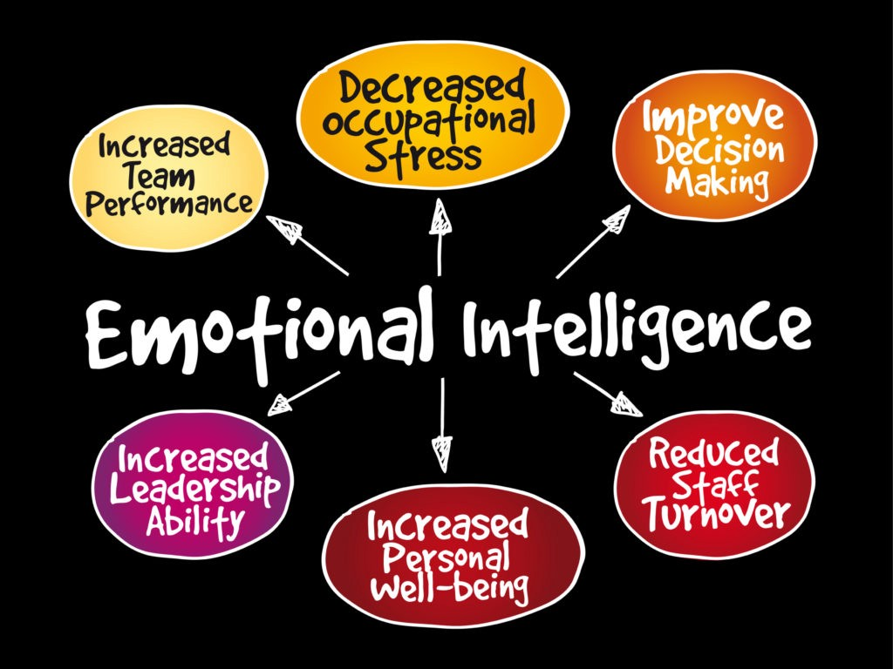
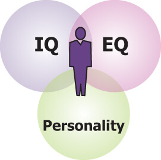

EQ and IQ
What is Emotional Intelligence?
Emotional intelligence (EI) is the ability to understand and manage your own emotions and also those of the people around you.
People who have a high degreee of emotional intelligence know how or what they are feeling, what their emotions mean and
also how these emotions can affect other people.

How is it different to IQ?
IQ is more of an academic intelligence in comparison to the emotional intelligence.
Why is it important?

Someone who has a high IQ but lacks in emotional intelligence may do well at school, although will lack a lot of social skills.
This can hinder their success in real life due to the balance needed to succeed within a business or with groups of people.
A balance between the both of these is important to be well rounded, although many argue that developing EI is more
important than having a higher IQ to be successful in life due to the ability to control your emotions and infulence other people
positively.